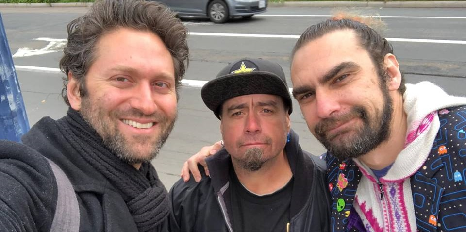

210 Reunions
And counting...
20 years
Average time disconnected
1 month
Average time to reconnect
82%
Of delivered messages are postively received
We are Miracle Messages
We are a nonprofit reunion service to help our neighbors experiencing homelessness reunite with their loved ones in a positive and supportive way. Our process is simple and effective: we train local referral partners and volunteers (like you!) how to record and deliver Miracle Messages from their homeless neighbors to their loved ones, as a step toward reuniting families. Volunteers and referral partners use our mobile app, online referral form, paper form, or 1-800-MISS-YOU hotline to record short video, audio, or text messages. Then, our volunteer “digital detectives” attempt to locate the loved ones and deliver the message. Sign up to volunteer here!
Miracle Messages at work.


Volunteers and partner sites use our mobile app, 1-800-MISS-YOU hotline, and online and paper forms to record messages from their homeless neighbors to loved ones.
Our global network of 1,200 "digital detectives" scour the internet to locate loved ones and deliver messages. Join our weekly cold case committee call to get started.
Inspire others to get involved by sharing your outreach and reunion stories on social media. Rember to use hastag #MiracleMessages and tag us @MiracleMessages!
Attend one of our weekly volunteer calls and trainings
Offer Miracle Messages to a homeless neighbor or client
Find a missing homeless relative
Donate
Our vision, mission, and objectives
We are on a mission to end relational poverty on the streets, and inspire people everywhere to embrace their homeless neighbors not as problems to be solved, but as people to be loved.
We envision a world where everyone is nurtured by a social support system and sense of belonging – a social home – whether or not they currently have stable housing.
We are dedicated to reconnecting our homeless neighbors with their loved ones, in order to help rebuild their social support systems and improve their physical, mental, and social well-being.
Our approach is rooted in three core objectives:
Reconnect
82% of located loved ones are excited to reunite. Yet the average length of time disconnected is a staggering 20 years. We offer a humane way to help end homelessness: We reunite families.
Reconcile
With their families, yes. But also with us as their neighbors: "the homeless" are not problems to be solved, they are people to be loved. We generate stories that humanize: We shatter stigmas.
Empower
550,000 people sleep on the streets every night in the US. Frustrated? You are not alone. We offer simple tools for residents to make a difference in their local community. We empower neighbors.